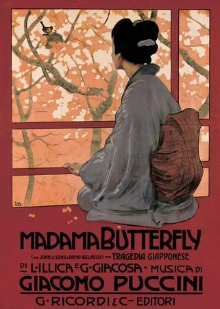
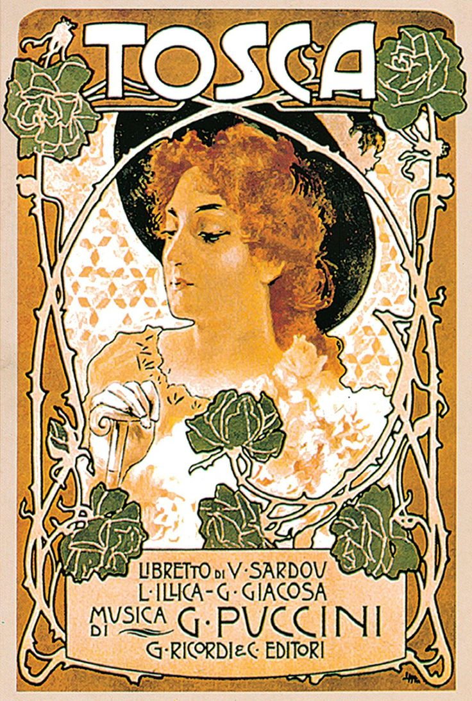
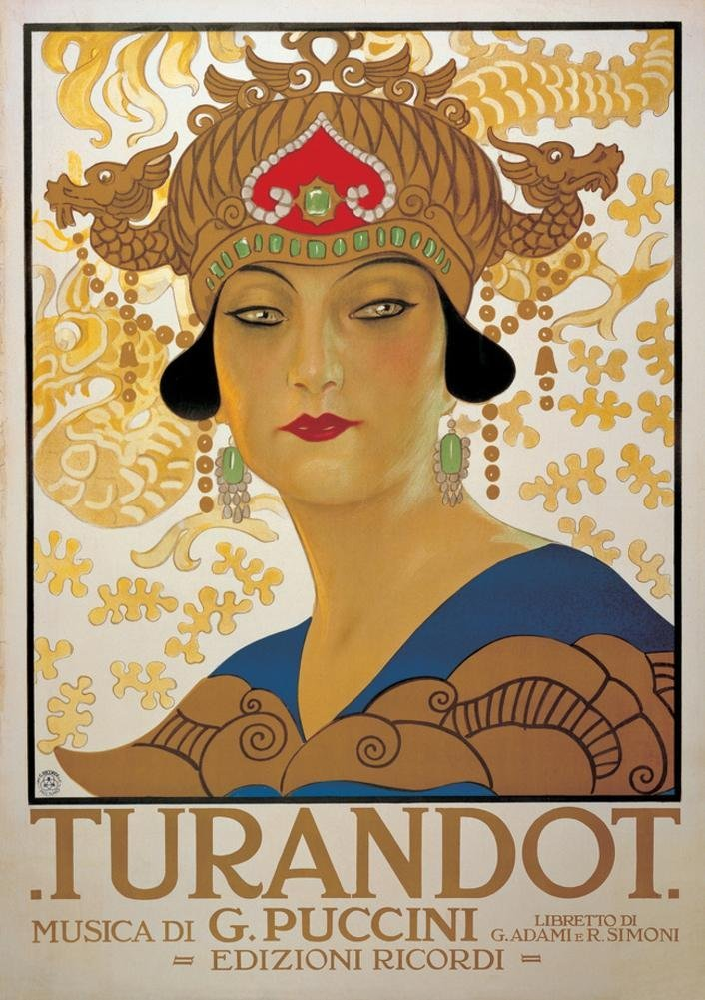
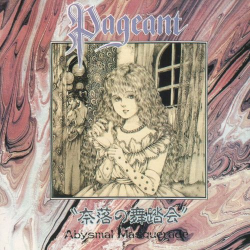

Madama Butterfly is an opera in three acts (originally two) by Giacomo Puccini, with an
Italian libretto by Luigi Illica and Giuseppe Giacosa.

La Tosca contains depictions of torture, murder and suicide, as well as some of Puccini's
best-known lyrical arias.

The opera's version of the story is set in China[1] and involves Prince Calaf, who falls in
love with the cold Princess Turandot. To obtain permission to marry her, a suitor has to solve three
riddles; any wrong answer results in death.

The night with amazing prog&symphonic rock from 80's of Japan. Very melodic sound with notes
of darkwave.